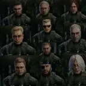
WTT - The Long Lost Heads of Yojenkz
- Downloads
- 28,561
- Favourites
- 27
- Mod lists
- 72
REQUIRES WTT-COMMONLIB ~2.0.1
Welcome back to another exciting installment of WTT Thursday ladies and gents! Or should we say, throwback thursday?!?! This mod brings back some heavily missed mods from a few updates prior: Yojenkz heads! Featuring 10 new heads made by Yojenkz, these new models are all added to the player character head options.
This mod was rewritten by yours truly, and uploaded with permission from the original author, Yojenkz, who was also listed as an additional author in case they decide to come out of retirement and regain their infamous title: Yojenkz, the Giver of Head.
WTT Thursday
Like my work? Buy me a coffee!
https://ko-fi.com/grooveypenguinx
- Big Boss (Metal Gear series) 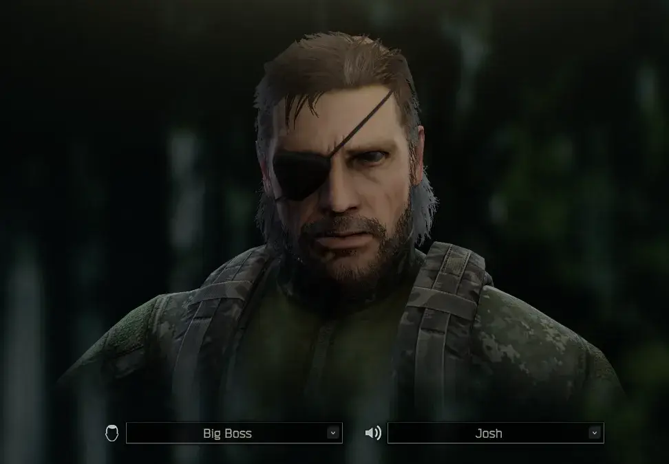
- Kaz Miller (Metal Gear series)
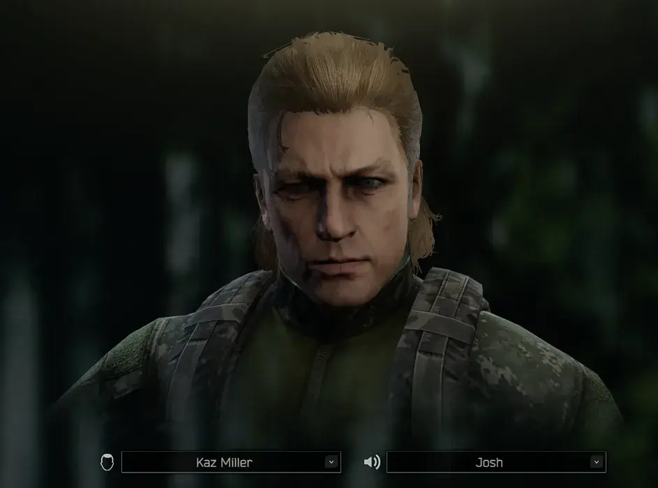
- Revolver Ocelot (Metal Gear Series)
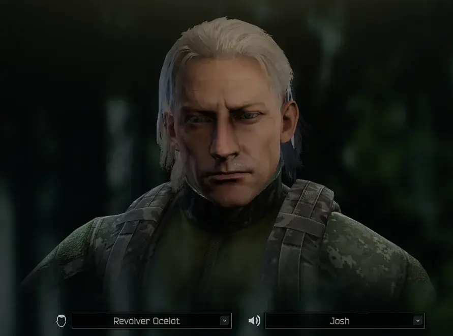
- Homelander (The Boys series)
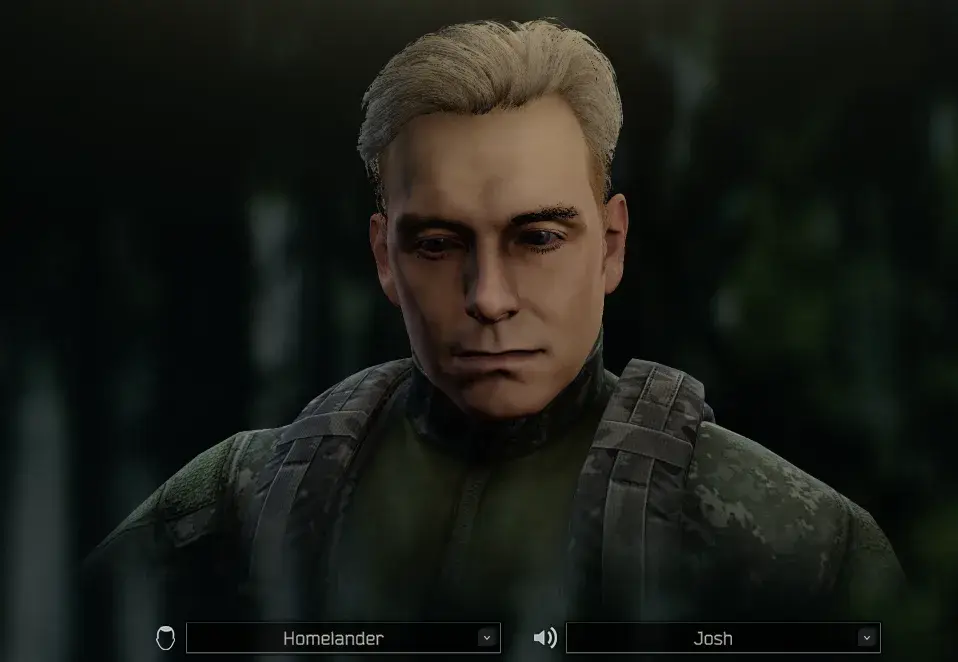
- Chris Redfield (Resident Evil series)
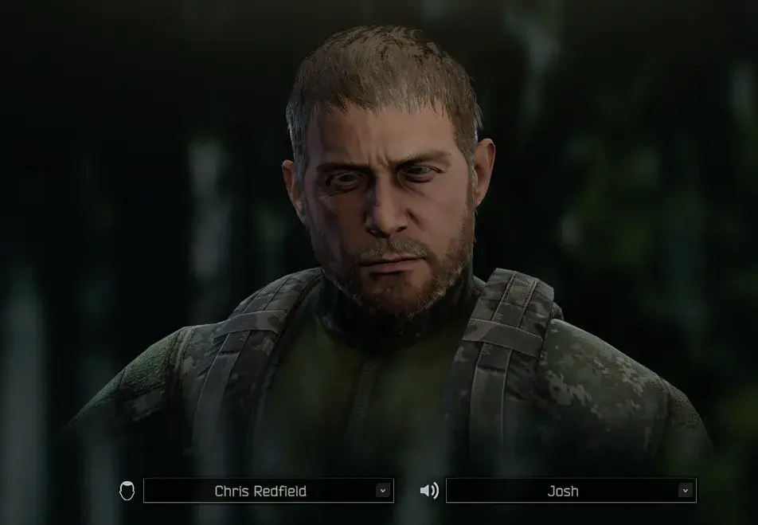
- Dante (Devil May Cry series)
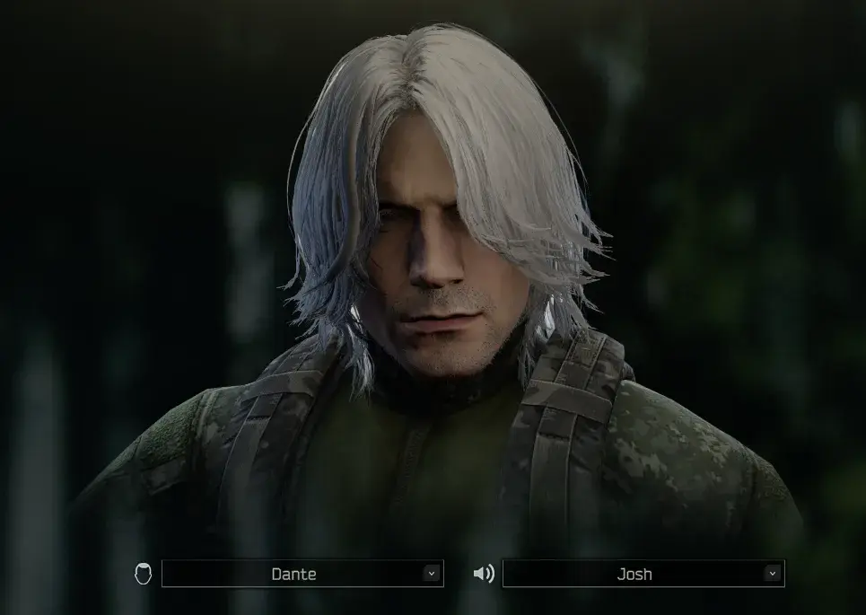
- Duke Nukem (Duke Nukem series)
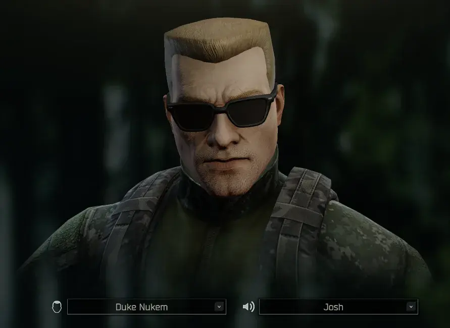
- Geralt (The Witcher series)
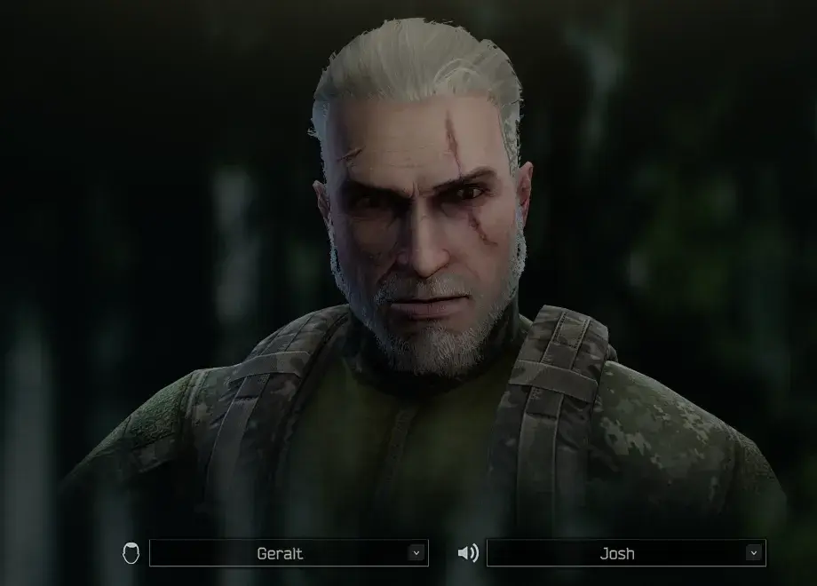
- Norman Reedus (Walking Dead, Dead Stranding, etc)
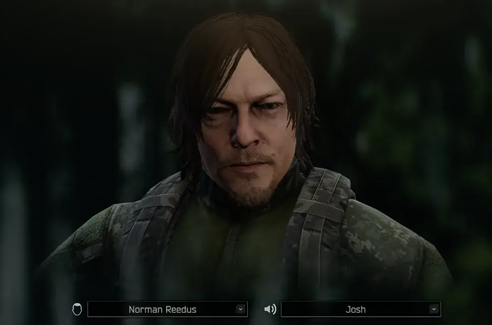 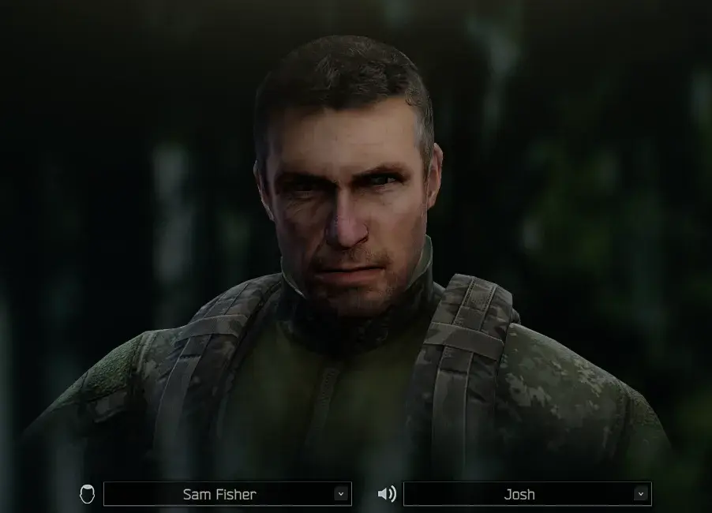
- Sam Fisher (Splinter Cell series)
What is Welcome To THE CITY?
Welcome To THE CITY (WTT) is a mod for SPT AKI that has been in development for over a year. What started as a small passion project has grown in size to incorporate 10+ core members as well as contributions from other well-known mod authors and friends of WTT alike.
How does Welcome To THE CITY change the game?
As a mod, WTT overhauls SPT AKI, touching on almost every vanilla game system, as well as adding completely new systems to the game and its core mechanics. Inspired by open-world hardcore survival projects like STALKER: Anomaly and STALKER: GAMMA, WTT takes SPT’s artificial multiplayer MMO difficulty adders and replaces them with a challenging world economy, loot scarcity rebalancing, a lore friendly quest overhaul, and a map-traveling system built from rewritten portions of the Traveler mod allowing seamless travel between maps. Aside from its changes to the game’s core properties, WTT also adds to the world’s variety of traders, NPC’s, characters, items, and quests:
- Over 500 custom bundles adding new weapons, attachments, wearables, containers, food, medical, and barter items.
- New bosses with their own custom gear that will be properly incorporated into WTT’s quest lines.
- New, meaningful traders with their own lore-friendly quests and narrative elements to help the player progress through the story-line of WTT.
- New playable characters and outfits that will add to the player’s customization abilities.
- New quest types incorporating brand new map extraction points, putting the player’s knowledge and familiarization of SPT’s maps to the test.
Welcome To THE CITY stands as one of the largest mods created for SPT AKI thus far.
When does Welcome To THE CITY release?
Thursday.
Which Thursday?
TBD
Want to follow our progress?
You can follow the project through it’s development in our discord here:
Version
2.0.1
REQUIRES LATEST VERSION OF COMMONLIB (2.0.6)
- Updated structure for new commonlib release. Should fix fika issues downloading the audio bundle
Dependencies
Version
2.0.0
4.0.3 update! REQUIRES 4.0.3 **REQUIRES WTT-COMMONLIB 2.0.1
- total code rewrite
- moved all the client logic over to commonlib 😎
Dependencies
Version
1.0.5
Patch Notes:
- ripped ALL the bundles and rebuilt all heads in unity 2022,
- added new scripts for the facecover alternative mesh (might do another pass later and remove hair/beards for the alternate model),
- added hot object script to all the heads so they show on thermals now (lol),
- added onto the servercode so the heads show up in the new selection menu, as well as the voices,
- applied new textures and materials to Homelander so he no longer looks like play-doh (he’s got a super tan now though… might adjust later),
NEW FEATURES!,
- FaceCard Audio! When you select a character, a thematic song will play in the background during character selection (volume adjustable in bepinex menu),
- Hideout Radio Audio! When you first enter the Hideout, or if the replacement chance hits, the radios in the hideout will now play your themed song! (10% chance by default, all options configurable in the bepin menu to change volume/chance/toggle radio song replacement on/off),